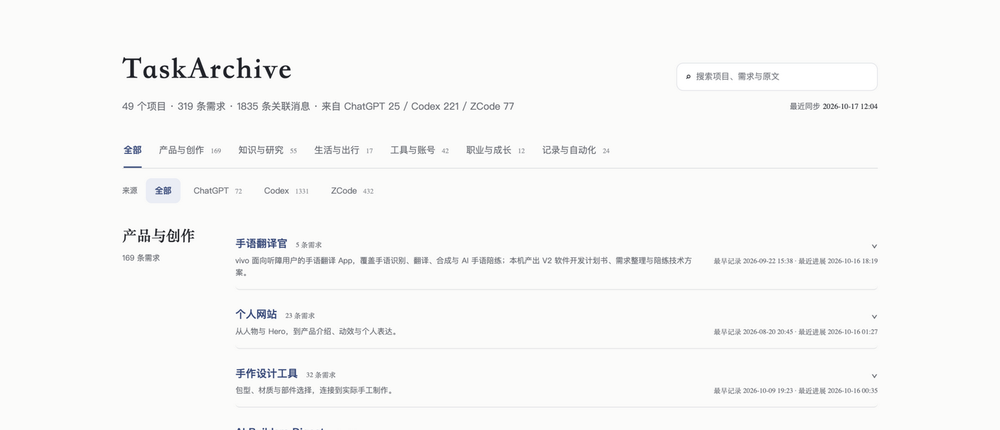
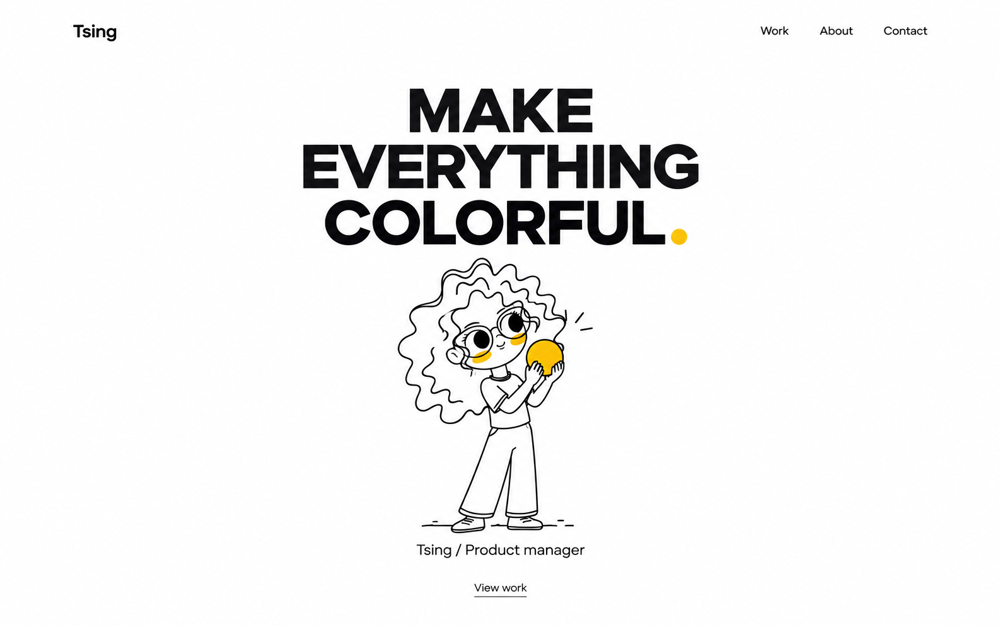

01
任务档案
把多个平台与 AI 的对话历史自动分类整理，成为一目了然的工作中台。
- 多平台聚合Codex、ChatGPT、ZCode 的对话汇成一份档案
- 自动分类按产品与主题分组，结构化呈现每条需求
- 每日更新每天 12 点自动同步，随时可查最新记录

TsingProduct manager
向下滑动

把多个平台与 AI 的对话历史自动分类整理，成为一目了然的工作中台。
开源浏览器扩展：在 ChatGPT 侧边随手摘录对话，沉淀为 Markdown 笔记。
为视频自动生成字幕，并完成剪切与拼接。
产品经理 / Product Manager
大家好，我是Tsing，ISTJ
“身经百战”的AI实践者，技术与APPLE的崇拜者，坚定的自由追逐者。
蔚来 · 语音导航产品经理
负责车机 NOMI 的语音导航体验，涵盖需求洞察、功能定义与体验交付。
博世 · 碳益 SaaS 产品经理
负责碳计算 SaaS 平台「碳益科技」从 0 到 1，涵盖产品定义、交互设计与上线运营。